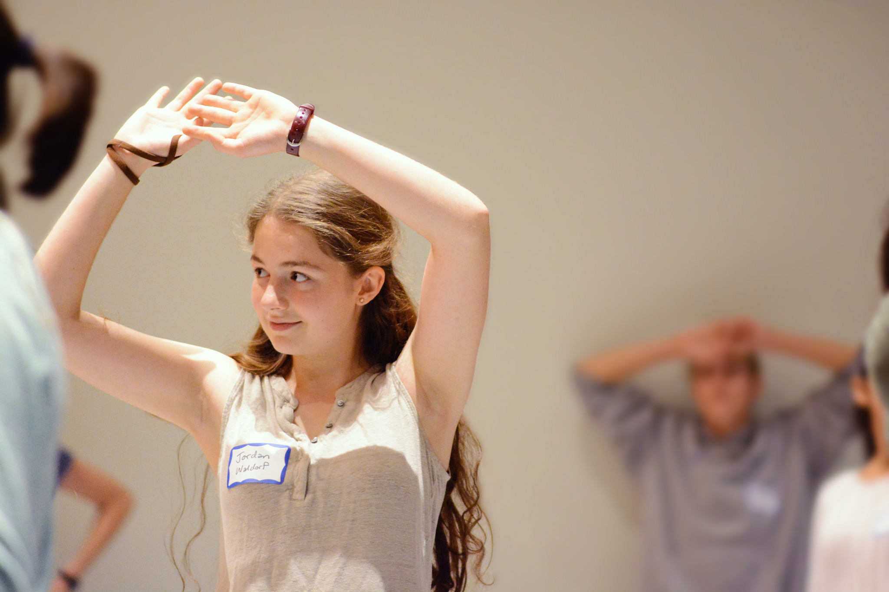

Meet Massachusetts Homeschoolers: Jordan Kammeyer
By Jordan Kammeyer
Why would a straight-A student who loved school decide to leave it after ninth grade?
My name is Jordan, and I am a 17-year-old high school senior. I am the oldest of five children, and I live on a two-acre homestead in the Berkshires of Massachusetts. Here we have raised chickens, sheep, rabbits, and pigs, and have been homeschooling for the past several years.
I find the term homeschooler
to be limiting. It makes it sound like I do school at home, which is not a bad thing; it is just not what I do. I often call myself an unschooler
or a self-directed learner.
I have been responsible for my education ever since I left school three years ago. I have noticed a trend of kids being homeschooled through middle school and then attending conventional high school, but it was the reverse for me; I left school after ninth grade, at a time when I could do so much more on my own.
My family moved around a lot when I was in elementary school, and I went to public school in each new place: Long Island, Houston, Brooklyn. After moving to the Berkshires in fifth grade, I transferred to a Waldorf school. This transition from mainstream education to alternative education became my first step in living differently.
I had always enjoyed school—I found test-taking and memorizing and grade-earning to be fun. At Waldorf—where they aim to engage the student’s whole being, not just the mind—I enjoyed school even more. I was challenged in a new way when I had to learn carving and German and knitting and juggling. I became more musical, more athletic, more connected to my body. I graduated from Waldorf middle school to Waldorf high school, and though I enjoyed the activities there as well, I began to feel restless. Between theatre and sports and making seminar books (their alternative to reading textbooks), I found I didn’t have the time or energy to pursue the passions and interests that were blossoming in my mind. My mother was already homeschooling my younger siblings, and with so much schoolwork and extracurriculars, I hardly saw them. Both my mother and I began to consider unschooling more deeply; she had read the work of authors like John Taylor Gatto, John Holt, and Roger Schank, and I was reading The Teenage Liberation Handbook * by Grace Llewellyn, which lit me on fire with inspiration. The possibilities for my life and meaningful ways to spend my time suddenly became endless. I felt that school was limiting me, and I wanted to go beyond the constrictions and busywork. My mother and I made the joint decision that I would stay home for at least tenth grade and see how it went.
The first year and a half after I left school, I went through what Grace Llewellyn describes as a deschooling
period. Up until then, I had been doing academics for my teachers, not myself, so I took time to detox from compulsory assignments. I read War and Peace, cooked Indian meals, and taught myself modern calligraphy. In eleventh grade, I slowly began to do academic work again, but now from my own initiative and not from external pressure. I did miss school—being with my friends every day, participating in all the group activities—but I also made new friendships that were based in common interests, not just because we were at the same place every day.
I was also able to continue doing extracurriculars with school kids, often through the local public school. I participated in the Fall Festival of Shakespeare with Shakespeare and Company and Mount Everett High School. I also began activities I had never tried before. The year I left school, I discovered contra dancing, which is a passion of mine and has been a gateway to other forms of social dance. I am now involved in the other aspects of contra dance as well: I “call” (prompt), choreograph new dances, and organize dance events. I also recently joined the Board of the Dance Flurry Organization, which organizes dances around the Albany, NY area. Another new interest was homeopathy, a natural form of medicine that I now know how to use for a plethora of common ailments.
I have been fascinated with anything to do with creativity or productivity, and acting on the advice of one of my favorite creatives, Austin Kleon, I started my own website and blog: www.missjordantaylor.com. While I don’t have school in my life, I have worked at my local food co-op, proofread for an audiobook narrator, butchered roosters with a neighbor, and calligraphed birthday invitations for an artist.
Even though I scored a 1540 on the SAT, I am not committed to the idea of going to college. I am still preparing for it, just to keep my options open. This is my third semester taking classes with Berkshire Community College (BCC), and this past semester I took a total of four classes: two with BCC, one with Williams College, and one with Massachusetts College of Liberal Arts (MCLA). I have also used plenty of free resources, such as Khan Academy, Duolingo, and my local library.
My life is overflowing, even in the midst of society’s shutdown. I feel that this education has prepared me better for life. In this time of uncertainty, not only do I feel resilient, but I see a world full of possibilities.
Jordan Kammeyer is a 17-year-old unschooler living in the Berkshires of Massachusetts. She is passionate about self-directed education and would love to answer any questions and encourage anyone interested in unschooling. She can be reached through her website, www.missjordantaylor.com, or via email at jordan@missjordantaylor.com.
*Amazon.com purchases that start in this email help support AHEM.